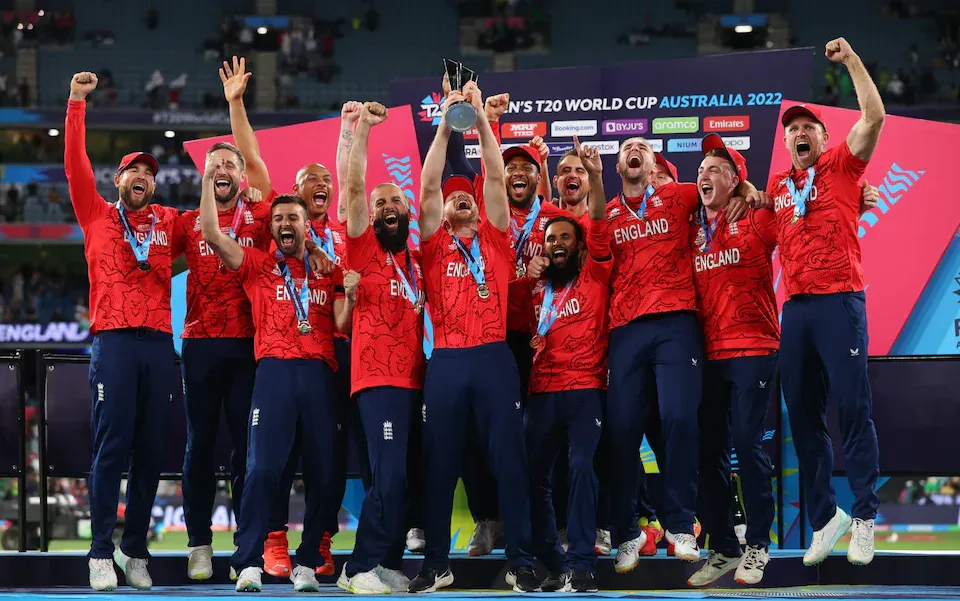
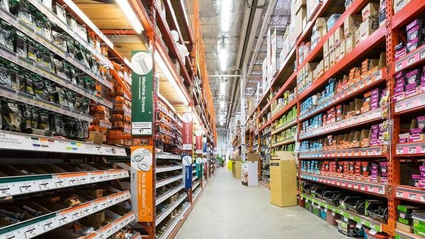

Published a research paper on role-based player performance indicators for T20 cricket at the 10th MathSport International Conference in Budapest, Hungary (pp. 107-114).
The performance indicator categorises T20 International players based on their roles and a variety of metrics, including traditional and non-traditional metrics
by leveraging machine learning techniques such as K-Means Clustering, one-vs-all classification, and Principal Component Analysis. Enabling
accurate player categorization through meticulous validation, ensuring precise role-based grouping, and optimal allocation of Key Performance Indicator weights.


Customers in any industry are hard-earned and companies don't want to lose them. This analysis was conducted using a comprehensive dataset involving various aspects of customer information.
I defined various KPIs, created a dashboard reflecting the KPIs, and wrote a report explaining my findings, including suggestions
as to what needs to be changed. The dashboard identified key factors contributing to customer attrition, such as dissatisfaction
with support or service and provides insights for churn reduction.
The vehicle insurance industry handles a lot of money in premiums and claims every year. It's important for insurance companies to
estimate the risk of covering a new customer. I developed a system to predict if a policyholder will file a claim in the next 6
months. I used upsampling techniques to deal with unbalanced data. I used different classification algorithms, like random forest,
decision trees, gradient boosting, and voting classifier, and enhanced through hyperparameter tuning to achieve accurate predictions.

Sales analysis is a vital aspect of running a successful business. It can help guide product focus, market strategies, and customer
outreach. In this project, I cleaned and prepared sales data for analysis using SQL before loading it into Power BI for data
modelling, analysis and visualization. I analyzed the sales data to identify weak areas and opportunities for the Store to boost business growth.
I conducted an extensive exploratory data analysis (EDA) of the Nepal Earthquake Dataset, using multivariate analysis and feature
analysis to identify the crucial factors that highlighting influence building damage. The EDA included sections on data cleaning,
data preprocessing, preliminary data analysis, and exploratory data analysis with research questions and data visualization.